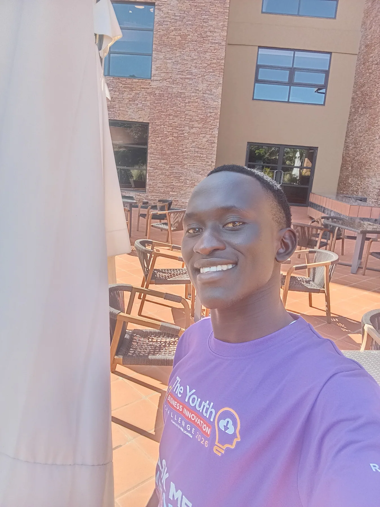
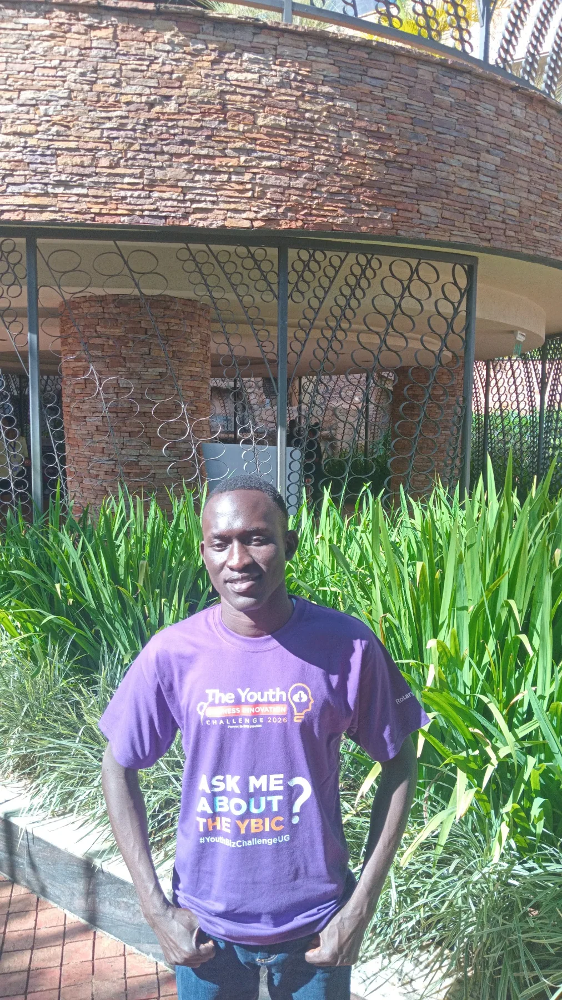

Start by listening.
Understand the people, environment, constraints and opportunities surrounding a challenge.
A civil engineer and social entrepreneur from Uganda, connecting technical thinking, local insight and practical action.
My journey is shaped by a conviction that talent, ingenuity and ambition exist everywhere, but opportunity and enabling systems are not always evenly distributed.
Coming from Kole in Northern Uganda, I have seen how communities navigate practical challenges with creativity and determination. That perspective informs how I think about engineering and entrepreneurship: solutions must make sense in the context where they are used.
My academic foundation in civil engineering gives me a structured way to approach problems, while my work in climate technology and youth innovation keeps me close to experimentation, people and implementation.
I want to help build practical systems and technologies that strengthen livelihoods, improve resilience and expand opportunities.
My work sits at the intersection of engineering, climate action and youth empowerment. I am particularly interested in solutions that respond to local needs while having the potential to scale responsibly across communities and markets.
This means treating innovation as a process: understand the challenge, work with the people affected, test possible responses, learn from evidence and improve.
Understand the people, environment, constraints and opportunities surrounding a challenge.
Apply sound technical reasoning, ask difficult questions and distinguish evidence from assumption.
Build partnerships, take practical steps, measure what changes and improve what does not work.
Engineering gives me a way to understand systems. Entrepreneurship gives me a way to test solutions. Community work reminds me who those solutions are for.
I am motivated by the space between disciplines, where technical knowledge meets lived experience and where collaboration can turn individual ideas into collective progress.


View or download my current CV, including professional experience, education, skills and recognition.
Request My CV ↗For partnerships, engineering conversations, climate innovation and opportunities worth exploring.
Get in touch ↗